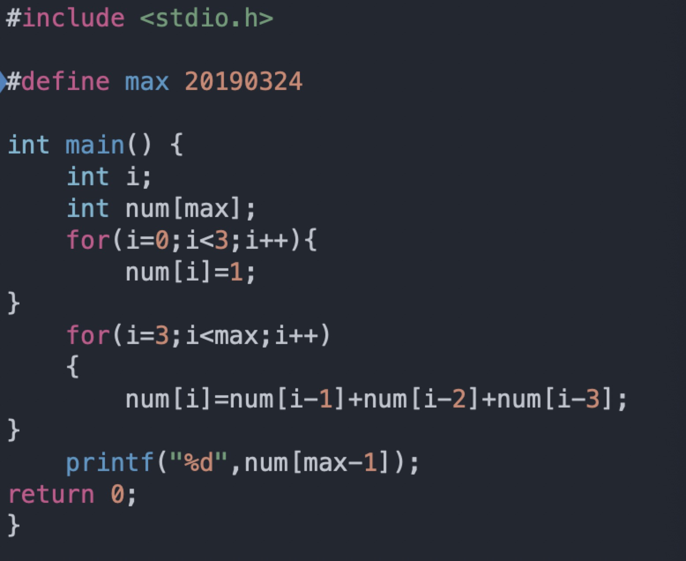
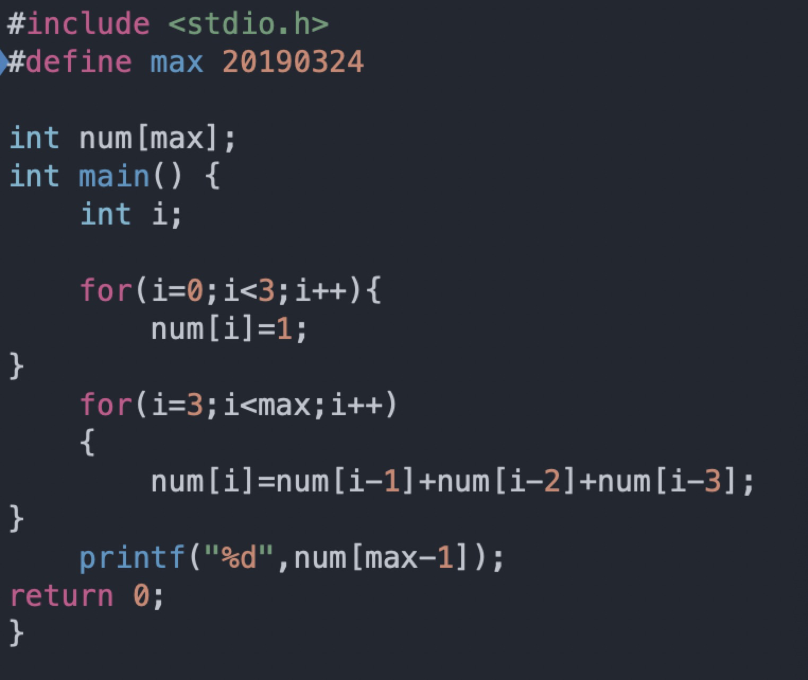

最近a算法题的时候碰到一道题：一个数列前三项都为1，之后每项的值等于前三项之和，求第20193024项的最后4位数字。一开始写的代码如下：

结果一直爆 Terminated due to signal: SEGMENTATION FAULT (11) 这个错误，改了好久没改出来。之后在stackoverflow上提问才找到自己错误所在。
这里先介绍一下栈区（stack)，堆区(heap)，数据区（data seg)和代码区。
栈区：由操作系统自动分配释放，存放函数的参数值，局部变量的值；当不需要时系统会自动清除。
堆区：由new分配的内存块，不由编译器管，由应用程序控制（相当于程序员控制）。如果程序员没有释放掉，程序结束后，操作系统会自动回收。
数据区：也称全局区或者静态区，存放全局的东西类似全局变量。
代码区：存放执行代码的地方，类似if else，while，for这种语句。
原来在main函数里面的数组是开在栈区(stack)，在函数外面的是开在数据区的。栈区的内存比较小，所以当数组非常大的时候，就会报错。假如把数组放在数据区就不会出现这个问题，因为数据区的内存很大。
修改后的代码如下：
